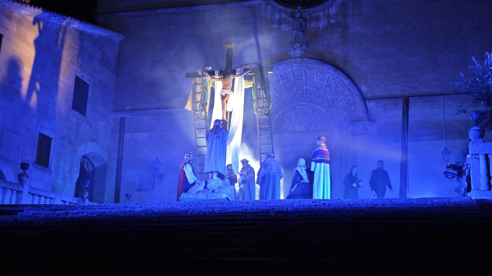

Història
Descobriu l'origen i l'evolució del Davallament de Felanitx al llarg del temps.
Llegir més


Espai dedicat a la preservació, estudi i difusió del patrimoni cultural associat al Davallament de Felanitx.


Coneix els personatges, la posada en escena i els elements que fan possible aquesta representació.
Descobrir